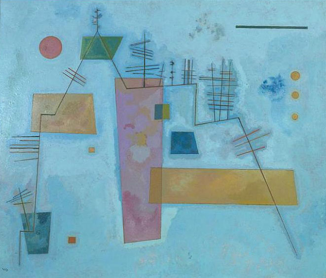

«Структура из углов»
Описание
В 1930 году, когда была написана картина "Структура из углов", Василий Кандинский преподавал в Баухаусе. Его пригласил сюда в 1922 году основатель школы-мастерской Вальтер Гроппиус. Кандинскому были очень близки его идеи, и он с радостью согласился на предложение, тем более что в Баухаусе работали его давние друзья и коллеги. Вместе с Паулем Клее, Лионелем Фейнингером и Алексеем фон Явленским они образовали так называемую "синюю четверку", названную так в память о "Синем всаднике".
Кандинский преподавал в Баухаусе почти до самого закрытия школы нацистами в 1933 году. За это время художнику вместе с коллегами и студентами пришлось перебраться из Веймара в Дессау, а затем - в Берлин. Но несмотря на нападки и критику со стороны правых партий, в Баухаусе продолжали делать свою работу. Кандинский вдохновлял своих студентов на творческие поиски, потому что был вдохновлен сам. Он читал курсы "Аналитический рисунок", "Основы художественного проектирования" и, пожалуй, самый важный и ценный для него - "Цвет".
Период работы в Баухаусе стал для художника едва ли не самым продуктивным в его творчестве. В 1926 году Кандинский напишет одну из самых важных книг в истории современной живописи - "Точка и линия на плоскости". Здесь же он напишет монументальное, предельно геометричное полотно "Композиция VIII", положившее начало новому этапу в его творчестве.
И если в начале этого периода в работах Кандинского прослеживается сильное влияние идей супрематизма и конструктивизма, то после переезда школы в Дессау его картины обретают новое, романтическое звучание и настроение. "Структура из углов" - одна из самых знаковых картин Кандинского тех лет. На смену строго упорядоченным композициям, напряженному противостоянию геометрических форм, приходит некая расслабленность и спокойствие. В картинах как будто появляется больше воздуха, в котором свободно парят элементы.